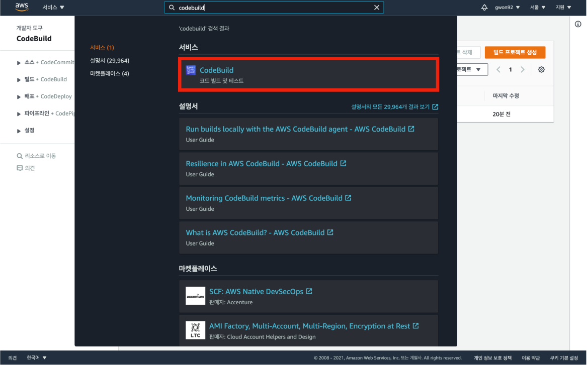
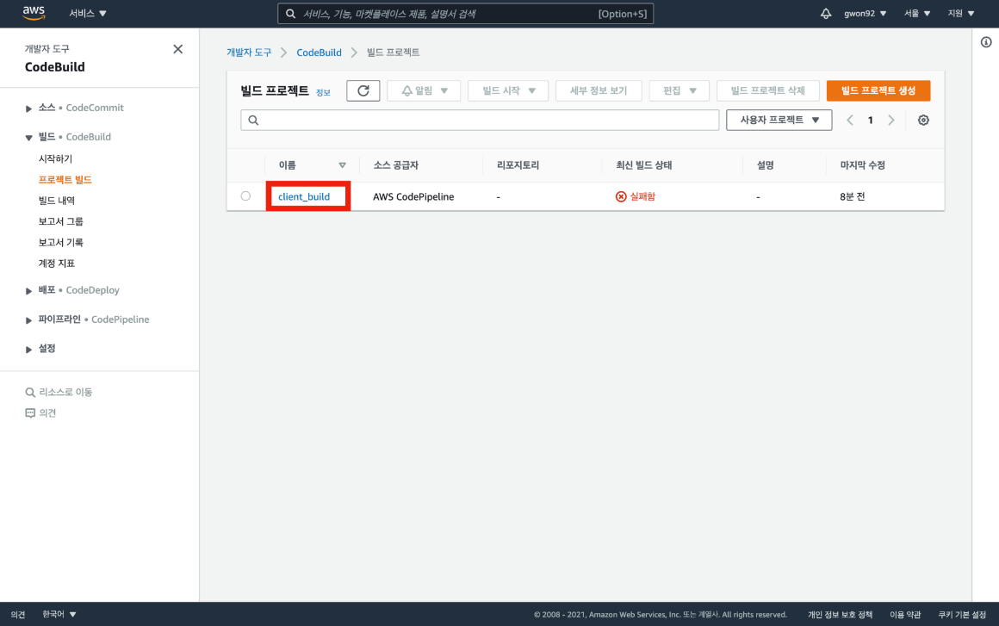
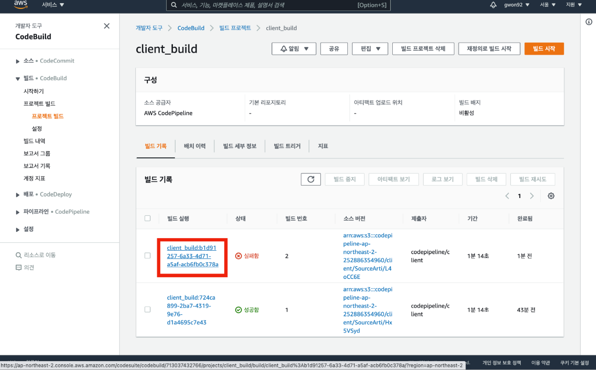
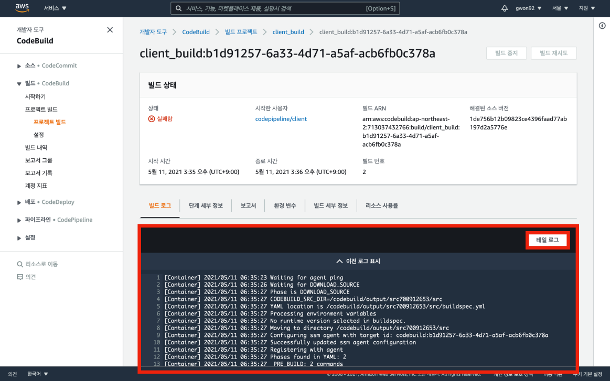
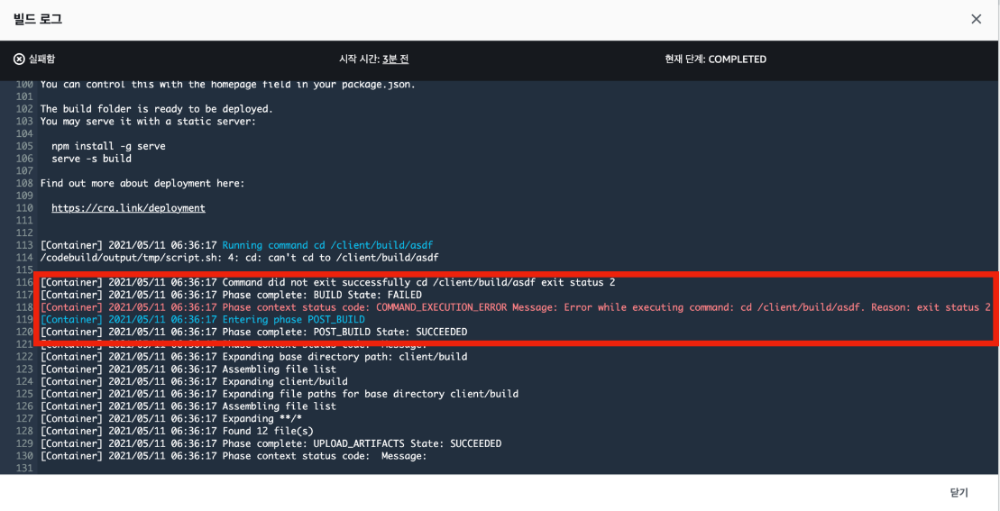
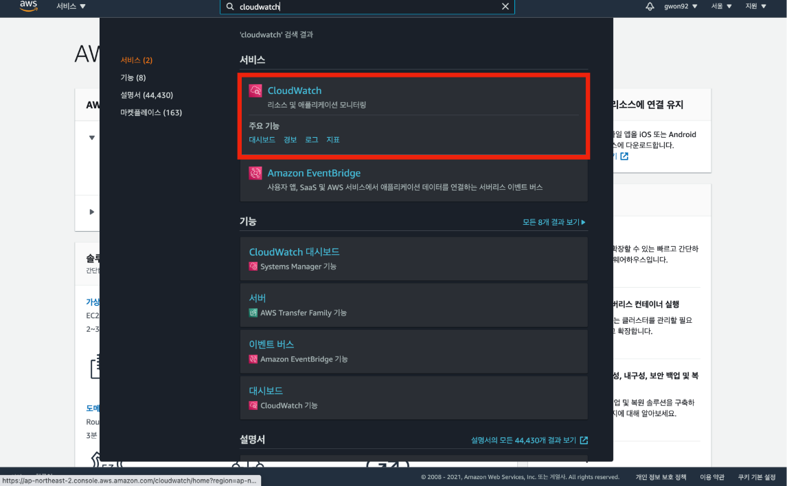
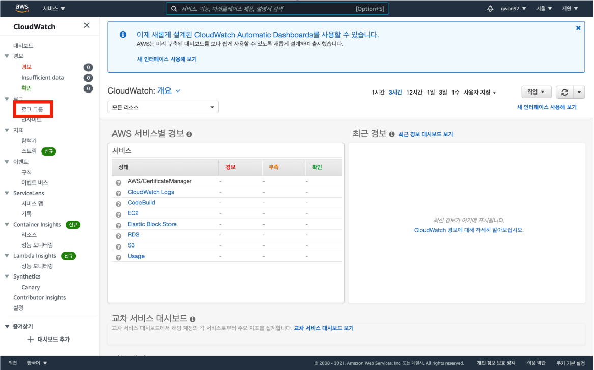
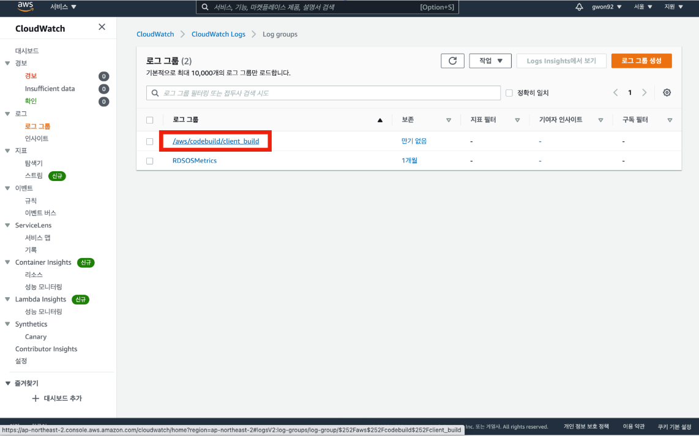
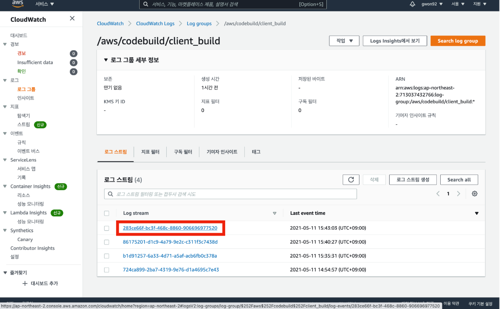
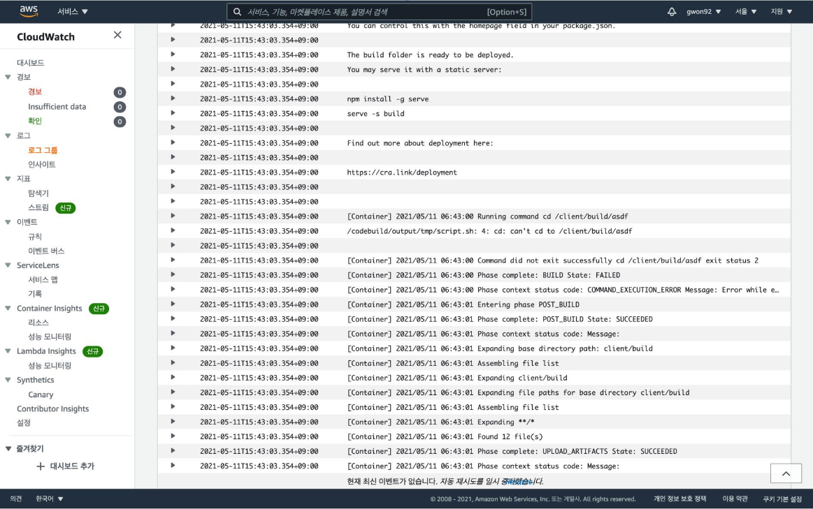

파이프라인을 구축하고 배포 자동화를 하는 과정에서 오류가 발생할 수 있다.
오류가 발생한 부분을 찾고 해결 방안을 모색하기 위해서는 배포 기록이 담긴 로그 파일을 확인해야 한다.
AWS 메인 콘솔 창에서 CodeBuild를 검색하여 CodeBuild 메인 콘솔로 이동한다.

사이드바에 프로젝트 빌드 탭을 클릭한 뒤 파이프라인을 구축하며 생성한 빌드 프로젝트를 클릭한다.

실패한 빌드 실행 기록을 클릭한다.

빌드 로그를 확인하면 buildspec.yml에 작성된 명령어가 실제로 정상적으로 작동하는지, 빌드 과정의 라이프 사이클이 어떻게 흘러가는지, 정확히 어떤 오류가 발생했는지 확인 가능하다.
빌드 로그를 확인하였으면 테일 로그 버튼을 클릭한다.

테일 로그 버튼을 클릭하면 빌드 로그의 끝부분에 해당하는 로그 기록을 보여준다.
오류나 핵심적인 내용은 로그 파일의 끝부분에 위치하는 경우가 많기 때문에 테일 로그를 이용하여 원하는 정보를 빨리 찾을 수 있다.

AWS 메인 콘솔 창에서 CloudWatch를 검색하여 CloudWatch 메인 콘솔로 이동한다.

사이드 바에 있는 로그 그룹을 클릭한다.

생성한 빌드 프로젝트 이름을 찾아 클릭한다.
</aws/codebuild/빌드 프로젝트 이름>으로 구성된 로그 그룹을 찾아 클릭하면 된다.

가장 최신 버전의 로그 스트림을 클릭한다.

CodeBuild 콘솔로 확인했던 빌드 로그가 CloudWatch에도 저장된 것을 확인할 수 있다.
